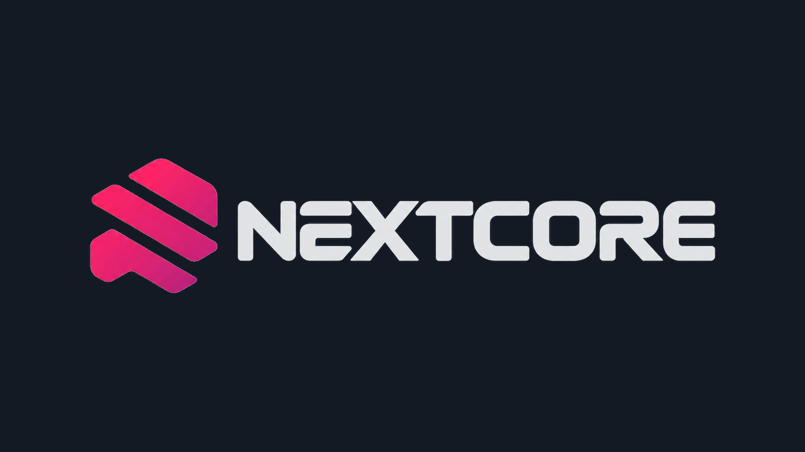
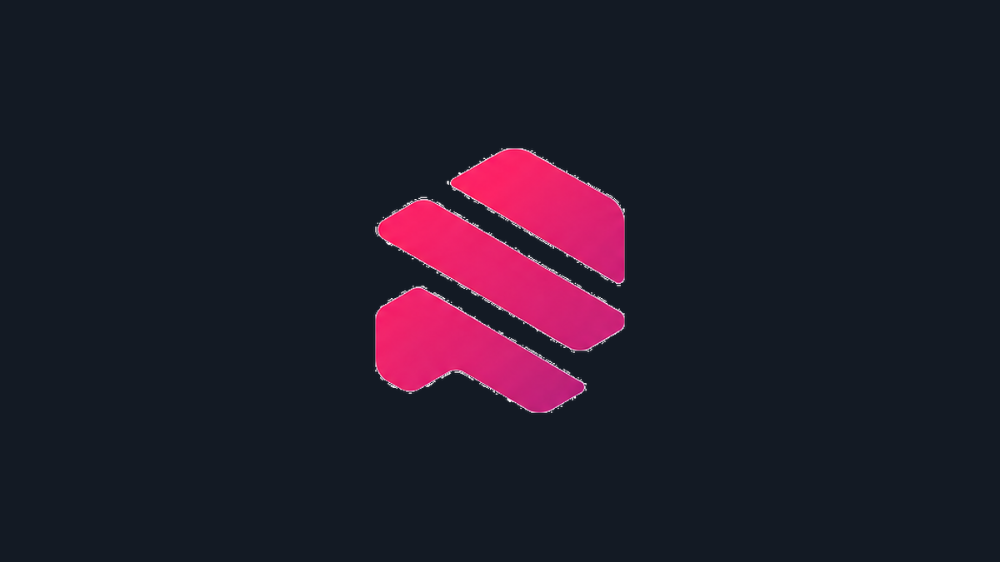
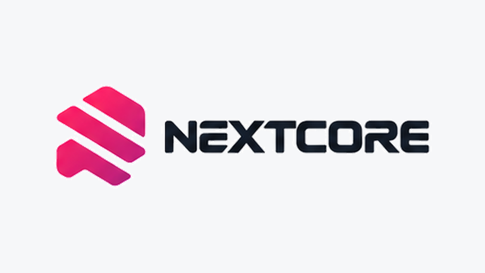
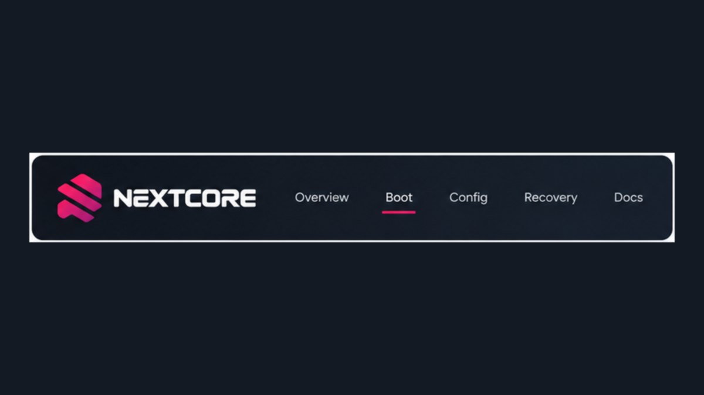

26x86 organization
Firmware you can hold.
Claims we will not fake.
NextCore is experimental UEFI boot tooling for macOS on x86. The public surface is a prebuilt picker, an EFI folder generator, and a Windows USB writer — not a verified macOS install.
macos_boot_verified = false
Start here
Userland tools. No crate source. No Apple assets.

Picker binary
Prebuilt BOOTX64.EFI with apfs-jumpstart and console-control.

EFI generator
Download official OpenCore, merge a profile, run ocvalidate, assemble EFI/.
tools/make_efi.py
USB creator
Partition a stick, write the ESP, re-hash every file on the media.
tools/make-usb.ps1Honest status
A picker on a USB stick is not a Darwin boot.
- x86 UEFI load
- partial
- OpenCore chain-load
- staged
- macOS Recovery volume
- not on exFAT
- Verified macOS boot
- false
Gemini Lake (15IGL7) has no AVX2 and no macOS 26 graphics driver.
BaseSystem.dmg copied onto exFAT is a file, not Recovery.
Version 2.0.0 is reserved until UART shows target-matching XNU and userspace.
Organization map
Public consumer repo first. Engineering modules stay separate.

Processed from NextCore-Brand-Kit · Core Pink #F41469 · Core Ink #131A24